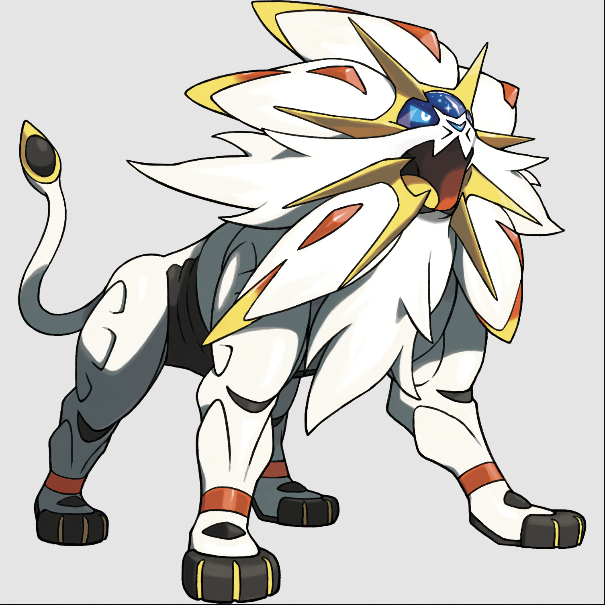
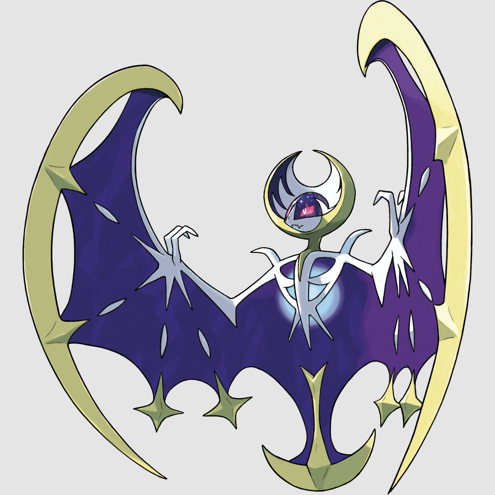

Solgaleo
Since ancient times, Solgaleo has been honored as an emissary of the sun. It is referred to
with reverence as the beast that devours the sun. Solgaleo's body holds a vast amount of
energy, and it shines with light when it's active. It has a flowing mane with a remarkable
resemblance to the sun.

Lunala
Since ancient times, Lunala has been honored as an emissary of the moon. It is referred to
with reverence as the beast that calls the moon. Lunala is constantly absorbing light and
converting it into energy. With its wings spread to absorb the surrounding light and
glittering like a crescent moon, it resembles a beautiful night sky.